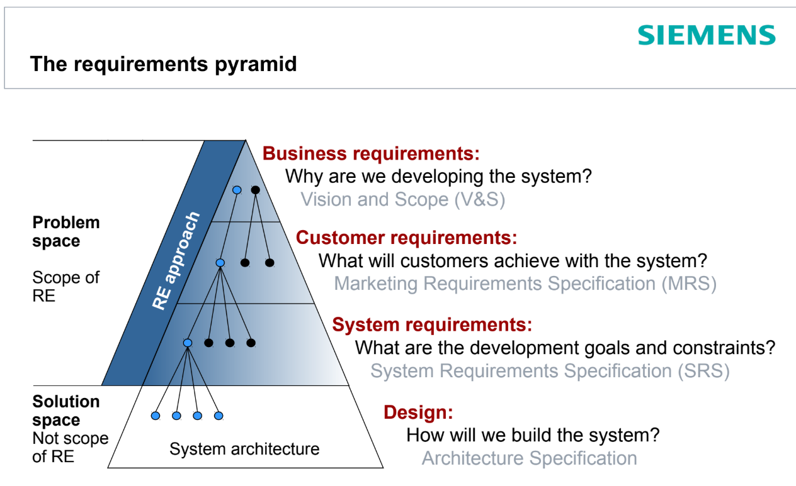
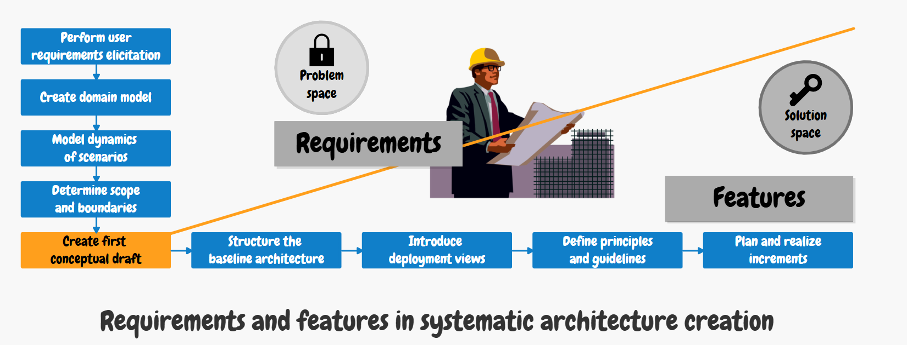
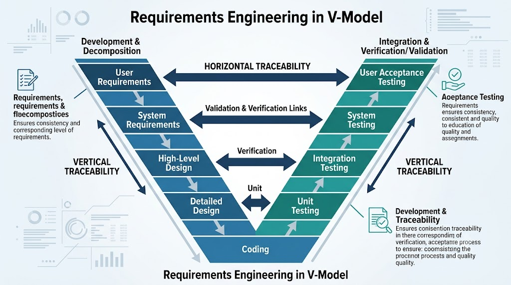
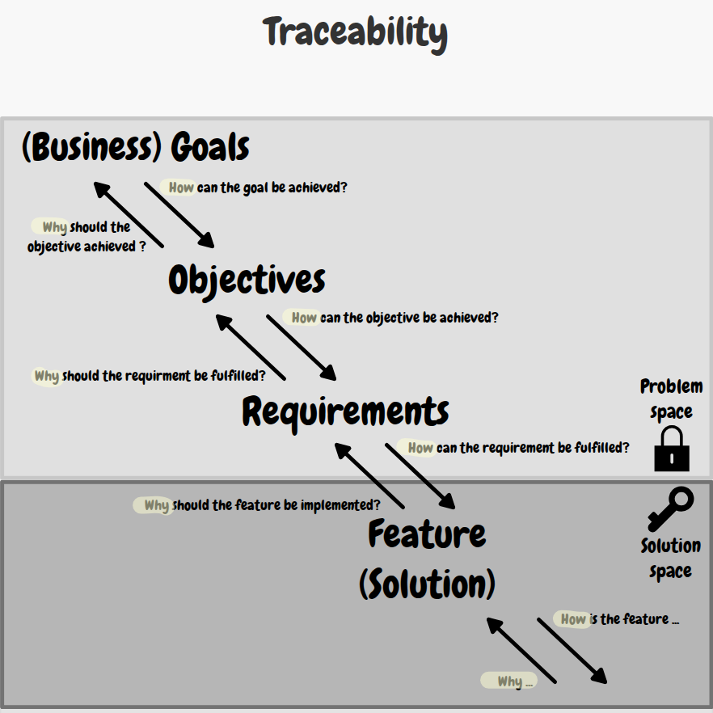

Problem space vs. Solution space and the L-model
The process of software design is a continuous and often iterative transition between the problem space and the solution space. A fundamental mistake made by many engineers is jumping into the "Solution space" before they have fully understood the "Problem space."

These spaces can be divided using key questions:
- What are the business goals and constraints? (Business requirements)
- What will the system do to fulfil these goals? (System Requirements / SRS)
- How will we actually build this system? (Architecture Specification)
L-model for systematic architecture: This concept illustrates the flow of information and decisions. RE is located at the very beginning (the upper horizontal arm of the letter L). Here, functional requirements, quality attributes, and fixed constraints are defined. These parameters then "flow down" (the vertical arm of the letter L) into the macro-architecture design, technology stack selection, layer design, and individual components. Architecture is thus a direct, logical response to the defined Problem Space.

#Requirements Traceability
Traceability means the ability to create, describe, and maintain an unbroken information trail throughout the entire lifecycle of a software system. It enables tracking development from the original business requirement, through the analytical use case, the architectural component design, and the source code, all the way to the acceptance test. According to standards (such as ISO/IEC/IEEE 29148:2018 - Requirements engineering), being traceable is one of the fundamental characteristics of a quality requirement, and each requirement must have a unique identifier enabling bidirectional links to both its source and its implementation.
#1. Classification of traceability by the direction of development flow
Pre-RS (Requirements Specification) traceability (Before specification): Records links between requirements and the artifacts on which they are based. For example, it maps the origin of a requirement to a specific stakeholder.
Post-RS traceability (After specification): Maps links between requirements and subsequent development artifacts. This includes, for example, the components, implementation (source code), and test scenarios associated with the requirement.
Traceability between requirements: Records dependencies directly between the requirements themselves. It captures situations where, for example, one requirement refines, generalizes, or replaces another requirement.
#2. Vertical vs. Horizontal traceability
- Vertical traceability (Vertical tracing): Tracks relationships across different levels of abstraction. It shows how requirements are refined and allocated from the strategic (business) level to the design of specific subsystems and software components.
- Horizontal traceability (Horizontal tracing): Tracks relationships at the same level of abstraction. Most commonly, it links a specified requirement directly to the testing and verification artifacts (such as test cases) that demonstrate its fulfilment.

#3. Bidirectional Traceability and its value
For the software architect (SWA), so-called bidirectional traceability is critical in a project and provides the following business value:
- Forward tracing – Impact Analysis: It is an essential tool for change management. If a requirement changes (for example, concerning data security under new legislation), the architect immediately knows which database tables and microservices the modification will affect.
- Backward tracing – Identifying waste (Gold plating): Helps remove unnecessary elements from the code. If a complex component exists in the system to which no current business requirement leads, it is waste and should be removed.
- Verifiability and Validation: Traceability helps objectively demonstrate that a requirement has been successfully implemented in the system and has undergone appropriate testing.

#4. Tools and techniques for maintaining traceability
- Requirements Traceability Matrices (Trace Matrices / RTM): A tabular method of representing traceability. Rows contain the initial artifacts (requirements), and columns contain the target artifacts (components, tests), with an intersection indicating a link. In practice, these matrices have proved difficult to maintain for large systems (for example, 2000 requirements) and quickly become outdated.
- Trace Graphs: A visual representation in which nodes represent individual artifacts (stakeholder, requirement, component) and edges represent specific semantic links (such as realized through, is origin, refines).
- Professional ALM/RM tools (Live Traceability): Cumbersome matrices are now being replaced by modern "live" tools such as Jama Connect, IBM DOORS Next, Siemens Polarion ALM, or PTC codebeamer. These tools update links in real time, maintain baselines, and provide the audit trails required for the certification of critical systems.
#The Software Architect's Task
The architect's key task regarding traceability is to document architecturally significant requirements (ASRs) and record their links to specific architectural decisions. This creates so-called Architecture Decision Records (ADRs) so that, even several years later, anyone on the team can understand why this particular solution was chosen and which requirement led to it.